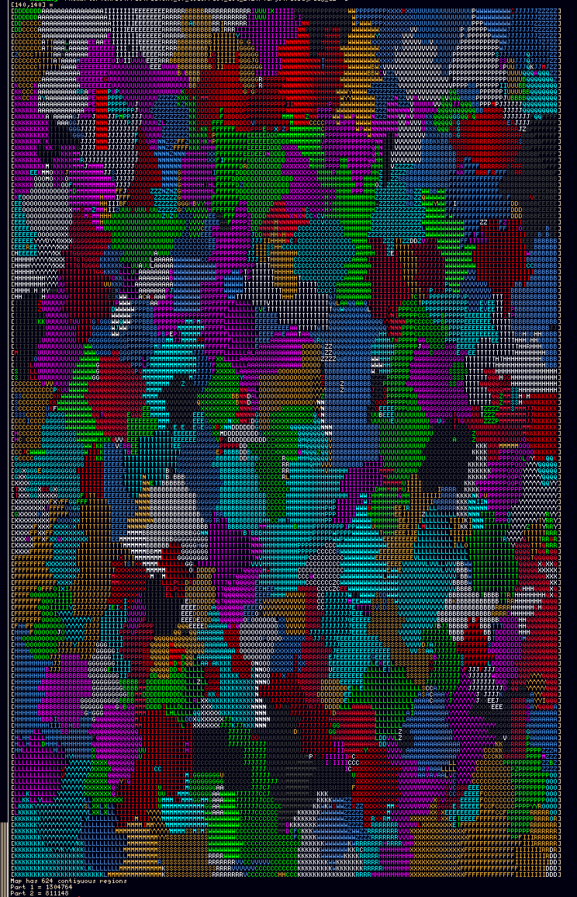
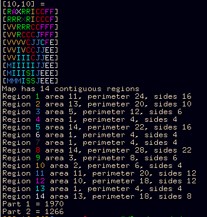

Parse stdin, so just redirect the input file with shell:
cargo run < input.txtAccepts -d for colorized map output debugging (cargo run -- -d < input.txt)

Accepts -v for the verbose list of all regions detected

Colors will use all the ANSI colors except black, to display on my black background terminal.
Pretty simple (it’s only day 12). From the initial input matrix of letters, create a second matrix of individual regions by using a flood-filling algo on each region for matrix cells not yet processes.
The floodfill function fills a contiguous row, then recursively calls itself for pixels above and under.
No trick except I was stuck on a off-by-one bug on the floodill algo that overshoot the min and max X of the row by 1, causing a particular case of connecting two different regions by their corners.
Part 1 then just re-parses the full region matrix, and for each cell add 1 to its corresponding region area counter (All regions are maintained in a preallocated Vec, no need for hashmap). Perimeter is increased each time an adjacent cell is not on the region.
Part 2 modifies the part 1 function (no need to create a second function, both can be done on the same loop).